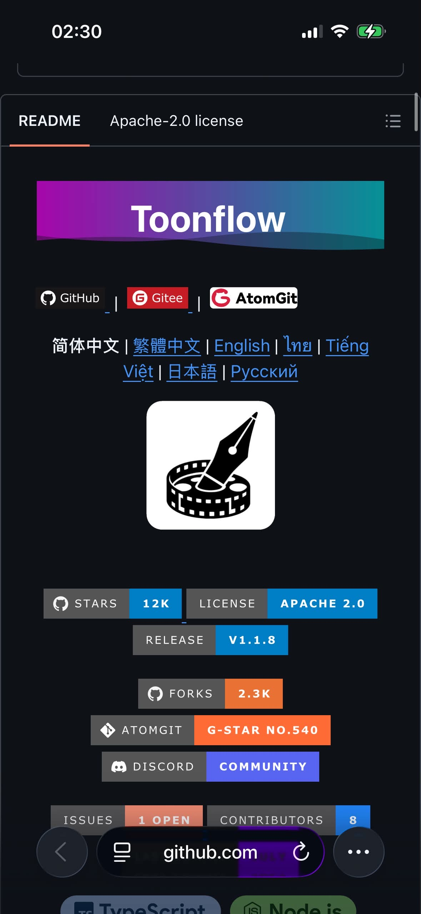
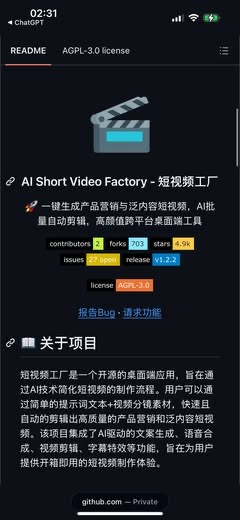

Threads｜shelte0r：Toonflow 與 short-video-factory，把 AI 影片從模型效果推向可跑通的工作流
來源是 Xi Hermine（@shelte0r）在 Threads 分享的兩個 GitHub 開源 AI 影片工作流：Toonflow-app 與 short-video-factory。貼文的核心判斷是：AI 影片競爭不只看單一模型生成效果，而是看誰能把腳本、分鏡、角色 / 場景、配音、字幕、剪輯與輸出串成可重複跑通的流程。


公開 Threads 內容
Threads 可見 canonical URL 為 `https://www.threads.com/@shelte0r/post/DbL5D4NGQx2`，頁面擷取時主串顯示約 7,416 次瀏覽，互動數約 148 讚、4 留言、31 轉發、247 分享。
作者提到：
- GitHub 開源社群近期很火的兩個 skill / 工具是 Toonflow 與 short-video-factory；貼文當下作者稱一個約 9k stars，另一個接近 4.9k stars。
- Toonflow 像一條 AI 短劇生產線，可把劇本拆成劇情、分鏡、角色與場景，再呼叫影片模型逐鏡頭出片，並透過角色、服裝與場景統一管理降低串臉問題。
- short-video-factory 偏產品行銷與帶貨短影音，可自動生成文案、配音、字幕，並把素材批量剪成短視頻。
- 貼文結論是：AI 影片現在拼的不是單一模型，而是完整流程是否能真正跑通。
圖片 / 封面描述
貼文有兩張主要圖片：第一張是 Toonflow 專案 README / GitHub 頁面截圖，可見 Toonflow 標題、GitHub / Gitee / AtomGit 入口與多語系連結；第二張是 AI Short Video Factory / short-video-factory README 截圖，可見短視頻工廠標題、產品行銷與泛內容短視頻描述，以及 stars、forks、issues、release、license 等徽章。兩張圖都屬於內容主圖，而非作者頭像。
官方來源與查核
Toonflow 官方 GitHub repo 描述其為「開源一站式 AI 短劇創作工具」，可將小說、劇本轉為動畫短劇，並整合 AI 編劇、智能分鏡、角色與影片生成。英文 README 也把它定位為圍繞「Planning → Scriptwriting → Storyboarding → Final Output」的短劇製作工作站。GitHub API 查核時，`HBAI-Ltd/Toonflow-app` 顯示約 12.5k stars、2.2k forks、Apache-2.0 授權；這代表貼文中的「約 9k stars」已低於查核時數字，屬快速成長中的開源 repo。
short-video-factory 官方 GitHub repo 描述其為「一鍵生成產品營銷與泛內容短視頻、AI 批量自動剪輯、高顏值跨平台桌面端工具」。README 內容列出文案生成、語音合成、影片剪輯、字幕特效、批量處理、多語言、跨平台等功能。GitHub API 查核時，`YILS-LIN/short-video-factory` 顯示約 4.9k stars、706 forks、AGPL-3.0 授權；這與貼文中「接近 4.9k Star」相符。
實務判讀
這則貼文值得歸檔，因為它抓到 AI 影片工具正在從「單點模型」移往「可控管線」的趨勢。對個人創作者或小團隊來說，真正節省時間的不是單次生成一段漂亮影片，而是把腳本拆解、鏡頭規劃、角色一致性、素材管理、配音字幕與輸出規格做成流程，讓 agent 或 coding assistant 能反覆修正。
兩個工具的定位也不同：Toonflow 比較接近短劇 / 故事型內容的生產線，重視劇本、分鏡、角色與場景一致性；short-video-factory 則比較接近行銷短影音工廠，重視文案、配音、字幕、素材混剪與批量輸出。若要導入，應先用一段低風險素材測試端到端輸出品質，再評估模型 API 成本、授權、素材版權、剪輯可控性與成片可商用性。
補充邊界
- stars、forks、issues 與 release 狀態會快速變動；本文記錄的是查核時快照。
- Toonflow 採 Apache-2.0，short-video-factory 採 AGPL-3.0；商業部署與衍生服務需分別檢查授權義務。
- 「一鍵導出」與「批量剪輯」仍需看本機環境、模型金鑰、素材品質、API 速度、剪輯規格與輸出平台要求。
- 角色一致性與劇情連貫性不是完全解決，而是透過角色 / 服裝 / 場景管理降低風險；正式製作仍需要人工審片與修正。